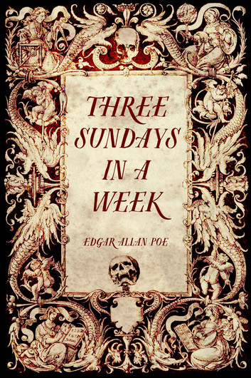
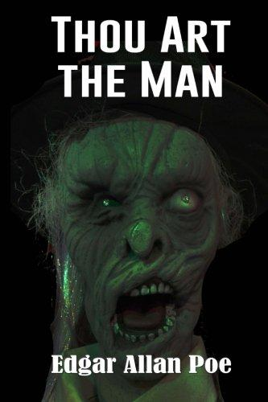
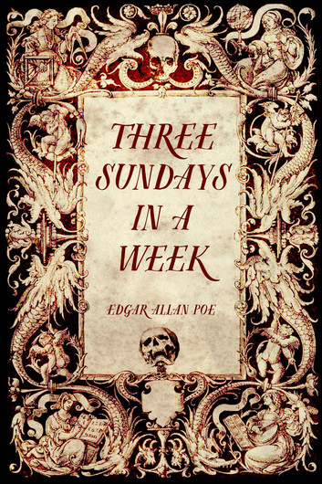
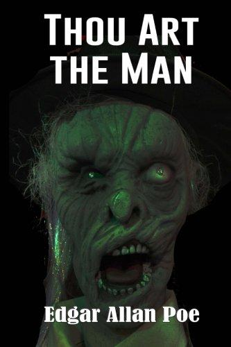
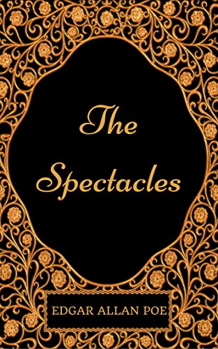
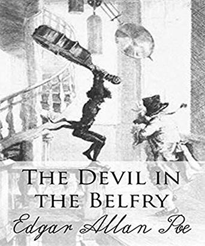
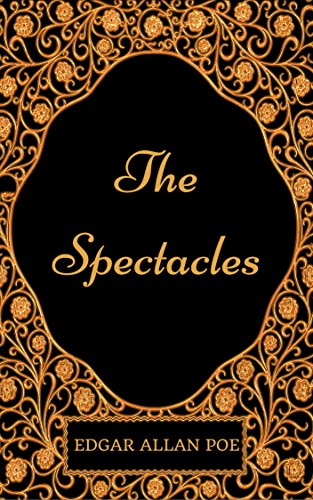
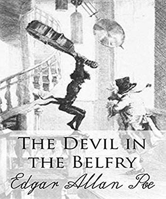

 



You hard-headed, dunder-headed, obstinate, rusty, crusty, musty, fusty, old savage!" said I, in fancy, one afternoon, to my grand uncle Rumgudgeon—shaking my fist at him in imagination.
Only in imagination. The fact is, some trivial discrepancy did exist, just then, between what I said and what I had not the courage to say—between what I did and what I had half a mind to do.
The old porpoise, as I opened the drawing-room door, was sitting with his feet upon the mantel-piece, and a bumper of port in his paw, making strenuous efforts to accomplish the ditty.
Remplis ton verre vide!
Vide ton verre plein!
"My dear uncle," said I, closing the door gently, and approaching him with the blandest of smiles, "you are always so very kind and considerate, and have evinced your benevolence in so many—so very many ways—that—that I feel I have only to suggest this little point to you once more to make sure of your full acquiescence."
"Hem!" said he, "good boy! go on!"
"I am sure, my dearest uncle [you confounded old rascal!], that you have no design really, seriously, to oppose my union with Kate. This is merely a joke of yours, I know—ha! ha! ha!—how very pleasant you are at times."
"Ha! ha! ha!" said he, "curse you! yes!"
"To be sure—of course! I knew you were jesting. Now, uncle, all that Kate and myself wish at present, is that you would oblige us with your advice as—as regards the time—you know, uncle—in short, when will it be most convenient for yourself, that the wedding shall—shall come off, you know?"
"Come off, you scoundrel!—what do you mean by that?—Better wait till it goes on."
"Ha! ha! ha!—he! he! he!—hi! hi! hi!—ho! ho! ho!—hu! hu! hu!—that's good!—oh that's capital—such a wit! But all we want just now, you know, uncle, is that you would indicate the time precisely."
"Ah!—precisely?"
"Yes, uncle—that is, if it would be quite agreeable to yourself."
"Wouldn't it answer, Bobby, if I were to leave it at random—some time within a year or so, for example?—must I say precisely?"
"If you please, uncle—precisely."
"Well, then, Bobby, my boy—you're a fine fellow, aren't you?—since you will have the exact time I'll—why I'll oblige you for once:"
"Dear uncle!"
"Hush, sir!" [drowning my voice]—I'll oblige you for once. You shall have my consent—and the plum, we mus'n't forget the plum—let me see! when shall it be? To-day's Sunday—isn't it? Well, then, you shall be married precisely—precisely, now mind!—when three Sundays come together in a week! Do you hear me, sir! What are you gaping at? I say, you shall have Kate and her plum when three Sundays come together in a week—but not till then—you young scapegrace—not till then, if I die for it. You know me—I'm a man of my word—now be off!" Here he swallowed his bumper of port, while I rushed from the room in despair.
A very "fine old English gentleman," was my grand-uncle Rumgudgeon, but unlike him of the song, he had his weak points. He was a little, pursy, pompous, passionate semicircular somebody, with a red nose, a thick scull, [sic] a long purse, and a strong sense of his own consequence. With the best heart in the world, he contrived, through a predominant whim of contradiction, to earn for himself, among those who only knew him superficially, the character of a curmudgeon. Like many excellent people, he seemed possessed with a spirit of tantalization, which might easily, at a casual glance, have been mistaken for malevolence. To every request, a positive "No!" was his immediate answer, but in the end—in the long, long end—there were exceedingly few requests which he refused. Against all attacks upon his purse he made the most sturdy defence; but the amount extorted from him, at last, was generally in direct ratio with the length of the siege and the stubbornness of the resistance. In charity no one gave more liberally or with a worse grace.
For the fine arts, and especially for the belles-lettres, he entertained a profound contempt. With this he had been inspired by Casimir Perier, whose pert little query "A quoi un poete est il bon?" he was in the habit of quoting, with a very droll pronunciation, as the ne plus ultra of logical wit. Thus my own inkling for the Muses had excited his entire displeasure. He assured me one day, when I asked him for a new copy of Horace, that the translation of "Poeta nascitur non fit" was "a nasty poet for nothing fit"—a remark which I took in high dudgeon. His repugnance to "the humanities" had, also, much increased of late, by an accidental bias in favor of what he supposed to be natural science. Somebody had accosted him in the street, mistaking him for no less a personage than Doctor Dubble L. Dee, the lecturer upon quack physics. This set him off at a tangent; and just at the epoch of this story—for story it is getting to be after all—my grand-uncle Rumgudgeon was accessible and pacific only upon points which happened to chime in with the caprioles of the hobby he was riding. For the rest, he laughed with his arms and legs, and his politics were stubborn and easily understood. He thought, with Horsley, that "the people have nothing to do with the laws but to obey them."
I had lived with the old gentleman all my life. My parents, in dying, had bequeathed me to him as a rich legacy. I believe the old villain loved me as his own child—nearly if not quite as well as he loved Kate—but it was a dog's existence that he led me, after all. From my first year until my fifth, he obliged me with very regular floggings. From five to fifteen, he threatened me, hourly, with the House of Correction. From fifteen to twenty, not a day passed in which he did not promise to cut me off with a shilling. I was a sad dog, it is true—but then it was a part of my nature—a point of my faith. In Kate, however, I had a firm friend, and I knew it. She was a good girl, and told me very sweetly that I might have her (plum and all) whenever I could badger my grand-uncle Rumgudgeon, into the necessary consent. Poor girl!—she was barely fifteen, and without this consent, her little amount in the funds was not come-at-able until five immeasurable summers had "dragged their slow length along." What, then, to do? At fifteen, or even at twenty-one [for I had now passed my fifth olympiad] five years in prospect are very much the same as five hundred. In vain we besieged the old gentleman with importunities.
Here was a piece de resistance (as Messieurs Ude and Careme would say) which suited his perverse fancy to a T. It would have stiffed the indignation of Job himself, to see how much like an old mouser he behaved to us two poor wretched little mice. In his heart he wished for nothing more ardently than our union. He had made up his mind to this all along. In fact, he would have given ten thousand pounds from his own pocket (Kate's plum was her own) if he could have invented any thing like an excuse for complying with our very natural wishes. But then we had been so imprudent as to broach the subject ourselves. Not to oppose it under such circumstances, I sincerely believe, was not in his power.
I have said already that he had his weak points; but in speaking of these, I must not be understood as referring to his obstinacy: which was one of his strong points—"assurement ce n' etait pas sa foible." When I mention his weakness I have allusion to a bizarre old-womanish superstition which beset him. He was great in dreams, portents, et id genus omne of rigmarole. He was excessively punctilious, too, upon small points of honor, and, after his own fashion, was a man of his word, beyond doubt. This was, in fact, one of his hobbies. The spirit of his vows he made no scruple of setting at naught, but the letter was a bond inviolable. Now it was this latter peculiarity in his disposition, of which Kates ingenuity enabled us one fine day, not long after our interview in the dining-room, to take a very unexpected advantage, and, having thus, in the fashion of all modern bards and orators, exhausted in prolegomena, all the time at my command, and nearly all the room at my disposal, I will sum up in a few words what constitutes the whole pith of the story.
It happened then—so the Fates ordered it—that among the naval acquaintances of my betrothed, were two gentlemen who had just set foot upon the shores of England, after a year's absence, each, in foreign travel. In company with these gentlemen, my cousin and I, preconcertedly paid uncle Rumgudgeon a visit on the afternoon of Sunday, October the tenth,—just three weeks after the memorable decision which had so cruelly defeated our hopes. For about half an hour the conversation ran upon ordinary topics, but at last, we contrived, quite naturally, to give it the following turn:
CAPT. PRATT. "Well I have been absent just one year.—Just one year to-day, as I live—let me see! yes!—this is October the tenth. You remember, Mr. Rumgudgeon, I called, this day year to bid you good-bye. And by the way, it does seem something like a coincidence, does it not—that our friend, Captain Smitherton, here, has been absent exactly a year also—a year to-day!"
SMITHERTON. "Yes! just one year to a fraction. You will remember, Mr. Rumgudgeon, that I called with Capt. Pratol on this very day, last year, to pay my parting respects."
UNCLE. "Yes, yes, yes—I remember it very well—very queer indeed! Both of you gone just one year. A very strange coincidence, indeed! Just what Doctor Dubble L. Dee would denominate an extraordinary concurrence of events. Doctor Dub-"
KATE. [Interrupting.] "To be sure, papa, it is something strange; but then Captain Pratt and Captain Smitherton didn't go altogether the same route, and that makes a difference, you know."
UNCLE. "I don't know any such thing, you huzzy! How should I? I think it only makes the matter more remarkable, Doctor Dubble L. Dee-
KATE. Why, papa, Captain Pratt went round Cape Horn, and Captain Smitherton doubled the Cape of Good Hope."
UNCLE. "Precisely!—the one went east and the other went west, you jade, and they both have gone quite round the world. By the by, Doctor Dubble L. Dee-
MYSELF. [Hurriedly.] "Captain Pratt, you must come and spend the evening with us to-morrow—you and Smitherton—you can tell us all about your voyage, and well have a game of whist and-
PRATT. "Wist, my dear fellow—you forget. To-morrow will be Sunday. Some other evening-
KATE. "Oh, no. fie!—Robert's not quite so bad as that. To-day's Sunday."
PRATT. "I beg both your pardons—but I can't be so much mistaken. I know to-morrow's Sunday, because—"
SMITHERTON. [Much surprised.] "What are you all thinking about? Wasn't yesterday, Sunday, I should like to know?"
ALL. "Yesterday indeed! you are out!"
UNCLE. "To-days Sunday, I say—don't I know?"
PRATT. "Oh no!—to-morrow's Sunday."
SMITHERTON. "You are all mad—every one of you. I am as positive that yesterday was Sunday as I am that I sit upon this chair."
KATE. [jumping up eagerly.] "I see it—I see it all. Papa, this is a judgment upon you, about—about you know what. Let me alone, and I'll explain it all in a minute. It's a very simple thing, indeed. Captain Smitherton says that yesterday was Sunday: so it was; he is right. Cousin Bobby, and uncle and I say that to-day is Sunday: so it is; we are right. Captain Pratt maintains that to-morrow will be Sunday: so it will; he is right, too. The fact is, we are all right, and thus three Sundays have come together in a week."
SMITHERTON. [After a pause.] "By the by, Pratt, Kate has us completely. What fools we two are! Mr. Rumgudgeon, the matter stands thus: the earth, you know, is twenty-four thousand miles in circumference. Now this globe of the earth turns upon its own axis—revolves—spins round—these twenty-four thousand miles of extent, going from west to east, in precisely twenty-four hours. Do you understand Mr. Rumgudgeon?-"
UNCLE. "To be sure—to be sure—Doctor Dub—"
SMITHERTON. [Drowning his voice.] "Well, sir; that is at the rate of one thousand miles per hour. Now, suppose that I sail from this position a thousand miles east. Of course I anticipate the rising of the sun here at London by just one hour. I see the sun rise one hour before you do. Proceeding, in the same direction, yet another thousand miles, I anticipate the rising by two hours—another thousand, and I anticipate it by three hours, and so on, until I go entirely round the globe, and back to this spot, when, having gone twenty-four thousand miles east, I anticipate the rising of the London sun by no less than twenty-four hours; that is to say, I am a day in advance of your time. Understand, eh?"
UNCLE. "But Double L. Dee-"
SMITHERTON. [Speaking very loud.] "Captain Pratt, on the contrary, when he had sailed a thousand miles west of this position, was an hour, and when he had sailed twenty-four thousand miles west, was twenty-four hours, or one day, behind the time at London. Thus, with me, yesterday was Sunday—thus, with you, to-day is Sunday—and thus, with Pratt, to-morrow will be Sunday. And what is more, Mr. Rumgudgeon, it is positively clear that we are all right; for there can be no philosophical reason assigned why the idea of one of us should have preference over that of the other."
UNCLE. "My eyes!—well, Kate—well, Bobby!—this is a judgment upon me, as you say. But I am a man of my word—mark that! you shall have her, boy, (plum and all), when you please. Done up, by Jove! Three Sundays all in a row! I'll go, and take Dubble L. Dee's opinion upon that."
Edgar Allan Poe es mejor conocido mayormente por sus historias de horror, sin embargo también escribió varios cuentos entretenidos y alegres. “Tres domingos en una semana” es uno de ellos, la historia nos muestra a un gruñón tío Rumgudgeon que se niega a conceder a su sobrino Bobby permiso para casarse. El tío, siendo astuto, dice que solo ofrecería su bendición cuando "tres domingos se reunieran en una semana".
Determinado, el sobrino encuentra la manera de que caigan tres domingos en una semana. La forma de conseguir esto fue gracias a dos capitanes, ambos provenientes de diferentes zonas horarias por la forma en que viajan. Uno jura que ayer era domingo, mientras que el otro jura que es mañana, siendo el día de su conversación un domingo. En otras palabras, al unir estas percepciones, incluso Rumgudgeon admite que son "¡Tres domingos seguidos!"